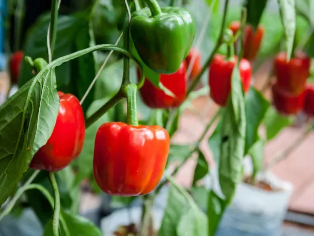

Paprika se najbolje znajde v topli, sončni in zavetni legi. Zaradi počasnejšega začetnega razvoja je za prvo sezono smiselna zdrava kupljena sadika, lastna vzgoja pa zahteva toploto in veliko svetlobe. Na balkonu izberite kompaktno sorto ter ji namenite svojo dovolj veliko posodo. Čas sajenja in obarvanje plodov se med sortami razlikujeta, zato barva sama še ne pove, ali plod ustreza želeni uporabi.
Vzgoja sadik in selitev na prosto
Za lastne sadike papriko sejemo že pozimi ali zgodaj spomladi v toplem prostoru. Zelo zgodnja setev je uporabna le, če lahko zagotovite tudi dovolj svetlobe za nadaljnjo rast.
Pred presajanjem sadike postopoma utrdite. Na vrt ali balkon jih prestavite po nevarnosti pozebe, ko so tudi noči dovolj tople. Okvirni razmik je 40–50 cm, vendar končno odločitev prilagodite sorti.
Gojenje v eni posodi
Za eno kompaktno sadiko načrtovalnik zahteva najmanj 15 l in 30 cm uporabne globine zemlje. Lonec z odtokom postavite na sonce, zaščiten pred močnim vetrom. Ob potrebi dodajte kratko oporo.
Ohranjajte enakomerno vlago, posebno med cvetenjem in debeljenjem plodov. Zalivajte pri tleh ter preprečite, da bi voda dolgo stala v podstavku. Gnojenje prilagodite substratu in navodilom gnojila, ne zgolj koledarju.
Kdaj pobrati paprike
Nekatere plodove uporabljamo zelene, drugi ostanejo na rastlini do polne sortne barve. Za obarvanje potrebujejo dodaten čas in primerne temperature. Poletni ter zgodnjejesenski termini so okvirni, ne obljuba pridelka.
Plodove raje odrežite z delom peclja, kot da bi jih trgali na silo in poškodovali veje. Redno pregledujte rastlino, pobrane plodove operite pred pripravo in poškodovane porabite pred nepoškodovanimi.
Informativni vodnik za osrednjo Slovenijo. Termine, velikost posode in razmike prilagodite sorti, vremenu in navodilom dobavitelja. Podatki niso napoved dejanskega datuma pobiranja.
Pogosta vprašanja
Zakaj paprika ostaja zelena?
Morda še ni dosegla polne zrelosti ali pa razmere upočasnjujejo obarvanje. Preverite predvideno zrelo barvo svoje sorte.
Je paprika primerna za senčen balkon?
Za zanesljivejšo rast in pridelek potrebuje dovolj neposrednega sonca ter toplote. V močno senčni legi je bolje izbrati druge rastline.